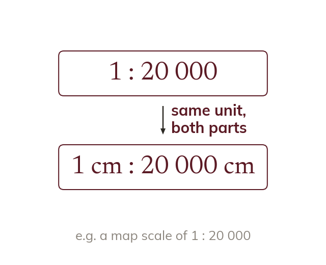

What a map scale is
A map scale is map distance : real distance. Both parts of the scale use the SAME unit.
A map scale is a ratio of distance on the map to the matching real distance, e.g. 1:50000 means 1 unit on the map represents 50000 of the same unit in reality. Both parts of the scale must be in the SAME unit before it is used.